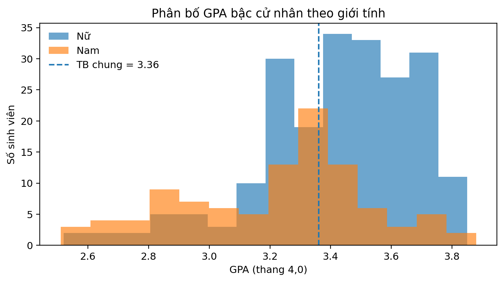
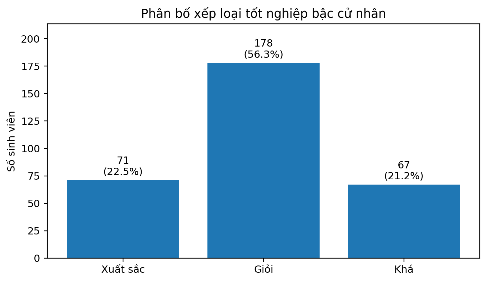
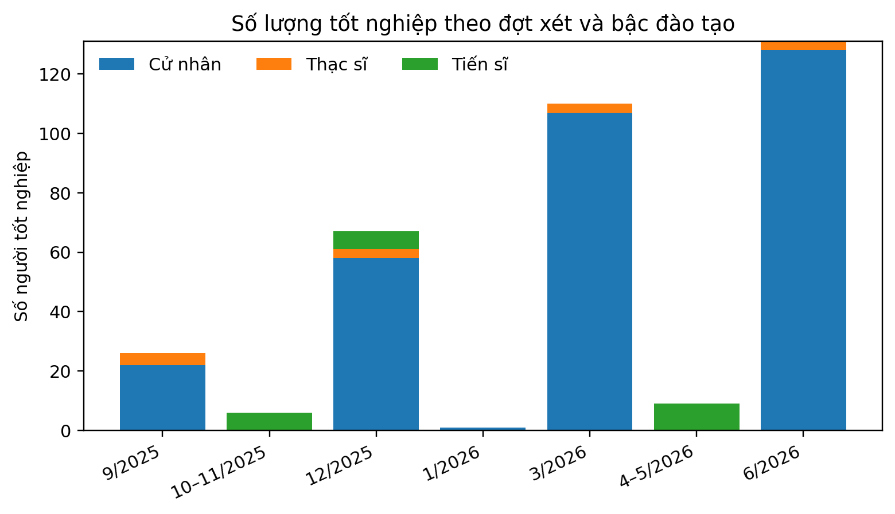
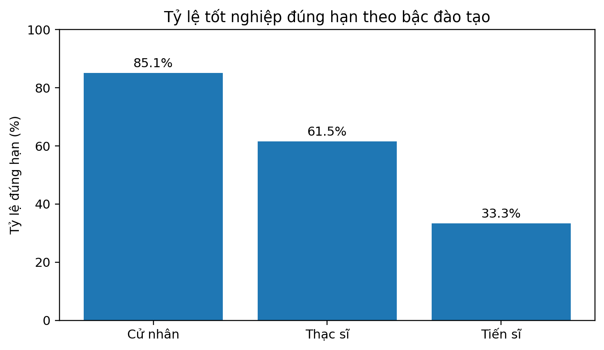

ECONOMICS · ANALYTICS · STRATEGY
Turning Data into
Business Decisions.
I am Nguyen Quoc Khanh, an International Economics graduate specializing in International Trade. This portfolio presents selected projects in business analytics, econometrics, machine learning, and data visualization.
Python · Stata · RQuantitative Analysis
Excel · Power BIData Visualization
ResearchInternational Economics & Trade
PORTFOLIO OVERVIEW● DATA + RESEARCH
Research awards02Faculty & university
Core toolsets05Python, Stata, R, Excel, BI
App installs10K+One-month campaign
Featured projects05Analytics & research
Project capability mix
ResearchAnalyticsEconometricsBIML
01 / ABOUT
Economic Foundation.
Analytical Mindset.
My background in International Economics and Trade is complemented by hands-on experience with Python, Stata, R, Excel, and Power BI. I focus on translating complex data into clear, testable, and decision-relevant insights.
02 / CAPABILITIES
Data Analysis
PythonpandasSciPyExcelData CleaningEDA
Econometrics
StataROLSFEM / REMPanel DataQuantile Regression
Visualization & Reporting
Power BIDAXMatplotlibDashboard DesignAcademic Reporting
03 / PROJECTS
FEATURED ANALYTICS CASE
Graduation Analytics Dashboard
Analyzed 350 graduation records across three degree levels using data cleaning, descriptive statistics, Welch t-tests, Chi-square tests, and Power BI-style visualization.
350Graduation records
3.36Average GPA
78.8%Good or Excellent
p < 0.001Key statistical tests
MACHINE LEARNING CASE
Amazon Recommendation System
A product recommendation system combining a popularity baseline, item-based collaborative filtering, and SVD matrix factorization. The full pipeline was executed on a structured synthetic benchmark to validate functionality, generate EDA outputs, and compare model performance.
Note: the metrics below are based on a synthetic benchmark because the original Amazon Electronics dataset was not included in the project package.
3,360Benchmark ratings
120 / 80Users / products
0.7769Item-CF RMSE
0.1719Item-CF Precision@10




STRATEGY & ANALYTICS CASE
Airline Revenue Optimization
A Monte Carlo simulation and booking-limit optimization project that balances low-fare volume with seat protection for higher-value demand.
36.8%Expected revenue uplift
94Saver booking limit
24Business seats protected
30,000Simulated flights
Geopolitical Risk, Climate Readiness & FDI
Panel-data research on geopolitical risk, ND-GAIN readiness, and their interaction across emerging markets.
Non-Tariff Measures & Seafood Exports
A research framework on non-tariff measures and Vietnam’s seafood exports to Japan using gravity modeling and trade indicators.
Academic KPI Dashboard
Designed a data model and KPI reporting framework for faculty-level monitoring and decision support.
04 / ACHIEVEMENTS & EXPERIENCE
First Prize — Faculty Research Competition
Recognized for research quality, teamwork, and academic project delivery.
Second Prize — University Research Competition
Developed and presented research in a university-wide competitive setting.
V-One Technology
Supported a data-driven campaign that generated more than 10,000 app installs in one month.
05 / CONTACT
PROFILE & PROJECTS
Let’s Connect
on Data and Research.
Reach me directly via email, phone, or LinkedIn.